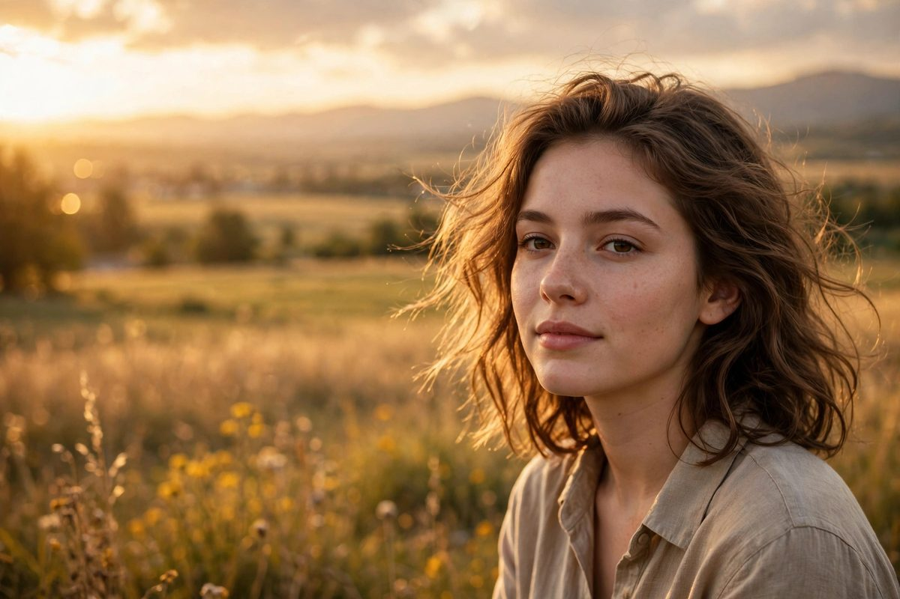

Portrait Editing Tutorial: Lightroom Mobile Step by Step

Start with Exposure and White Balance
Every good portrait edit begins with two settings: exposure and white balance. Open your photo in Lightroom Mobile and look at the face first. If the face is too dark, raise the exposure until the skin looks bright but the highlights on the forehead and nose are not blown out. If the face is too bright, lower the exposure a little and recover detail with the highlights slider. Next, fix the white balance. Tap the white balance eyedropper and tap something in the photo that should be neutral grey or white, such as a wall or a shirt. If there is nothing neutral, adjust the temperature slider by eye: move it warmer if the skin looks blue or grey, and cooler if the skin looks yellow or orange. Getting these two settings right before anything else makes every later step easier, because contrast, colour and sharpening all behave differently on a correctly exposed photo. Do not skip this step, even when you plan to use a preset.
Shape the Light on the Face
Once the exposure is right, shape the light. Portraits usually look best with soft, even light on the face and a gentle fall-off towards the edges. Lower the highlights slightly to bring back detail in bright areas such as the forehead, and lift the shadows a little to open up the eyes and the darker side of the face. Add a small amount of contrast to give the image shape, but not so much that the shadows turn harsh. The whites and blacks sliders set the ends of the tonal range: pull the blacks up slightly for a soft, airy look, or push them down for a moodier portrait. A useful technique is the radial mask. Draw an oval around the face, invert it if needed, and brighten just the face by a small amount while slightly darkening everything outside. This draws the viewer's eye to the person without looking edited, as long as the change is subtle. Keep checking the photo at full size while you work, because small screens hide harsh transitions.
Get Natural Skin Tones
Skin is the hardest part of portrait editing, and the goal is simple: it should look like real skin. Open the Colour panel and look at the orange and red channels, because skin lives mostly in those two colours. If the skin looks too orange, reduce the orange saturation a little and shift the orange hue slightly towards yellow. If the skin looks red or blotchy, do the same with the red channel. Lower the clarity slider a touch to soften the skin, but be careful: too much negative clarity makes the whole photo look hazy, and too much texture reduction erases the natural detail that makes a face look real. The Texture slider is gentler than Clarity for skin, so use Texture at a small negative value instead. Avoid the common mistake of smoothing the skin completely. Pores, freckles and fine lines are part of a person, and removing them makes a portrait look like a plastic doll.
Eyes, Hair and Small Details
The eyes are where people look first, so give them a little attention. Use a brush mask over the eyes and raise the exposure and sharpness slightly, and add a touch of clarity to make them stand out. If the eyes look dull, a tiny increase in saturation in the brush can bring back their colour, but keep it very small. For the hair, a brush with slightly increased texture and contrast adds definition without affecting the skin. Check the teeth and the whites of the eyes too: if they look yellow from warm lighting, a small brush with reduced saturation and slightly cooler temperature will clean them up.
Background, Crop and the Finished Look
Before you finish, look at everything that is not the person. A distracting background can ruin an otherwise great portrait, so use a mask on the background to darken it slightly, reduce its saturation, or lower its clarity. This separates the subject from the scene and gives the photo depth. Lightroom Mobile also has a blur tool for backgrounds in some versions, which can help when the original photo was taken with everything in focus. Next, check the crop. The eyes should sit near the upper third of the frame, and there should be a little more space in the direction the person is looking than behind their head. Straighten the photo if the horizon or a doorframe tilts. Finally, add a small amount of sharpening and a touch of vignette to frame the portrait, then step back and compare the edited photo with the original. If the person still looks like themselves, only better, the edit is done. Export at the highest quality for printing, or a slightly smaller size for sharing online.
Frequently Asked Questions
How do I fix yellow skin in Lightroom Mobile?
First correct the white balance by moving the temperature slider cooler. Then open Colour Mix and reduce the yellow and orange saturation slightly until the skin looks natural.
Should I smooth the skin in every portrait?
No. Light softening with the Texture slider is enough for most portraits. Heavy smoothing removes natural detail and makes people look unreal, especially in prints.
What is the best order for editing a portrait?
Exposure and white balance first, then light shaping, then skin tones, then eyes and details, and finally the background and crop. Fixing the big settings first keeps the small edits accurate.
Download Lightroom — Official App
Get the official Adobe Lightroom app free from your app store. Avoid modified APK files from other websites — they can contain malware and are not supported by Adobe.